←
Archives
- Welcome board designed by our 6-8th grade girls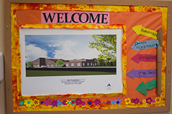
- Customized water bottles for everyone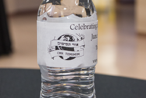
- Beautiful cake made in honor of the expansion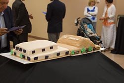
- Thank you to all who helped set up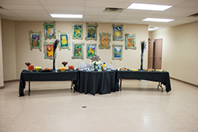
- Delicious fruits and pastries to enjoy

- The refreshments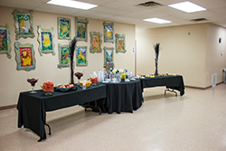
- The Main Donor Plaques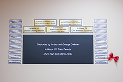
- 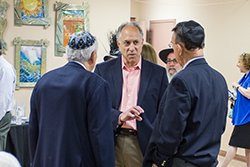
- 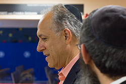
- Yosef Maldonado and daughter Simcha, proud members of Ohr Temimim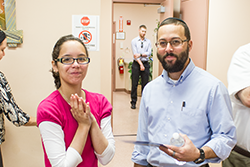
- Charlie Shuman, Rabbi Avraham Meir speaking with Rabbi Shanowitz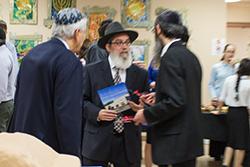
- An excited crowd getting ready for the ribbon cutting ceremony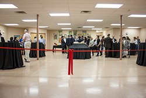
- Rabbi Mendel Meyers helping chat up some more anticipation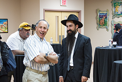
- Rabbi Taub concentrating on the survey, taking his service to the community very serious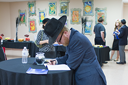
- Rabbi Shanowitz introducing the new expansion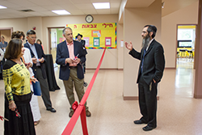
- Members of our school's foundation, kindly taking a break to pose for our camera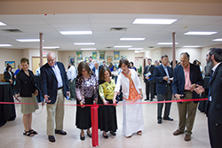
- Mazel Tov on the new classrooms!!!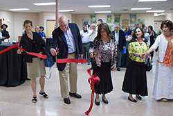
- Rabbi Shanowitz introducing our speakers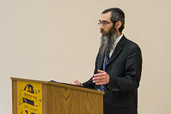
- Rabbi Meyers, who along with his wife Gitty Meyers has devoted his life to our school, giving words of blessing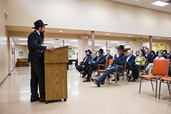
- Everyone enjoyed hearing about the school's history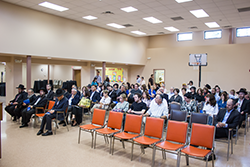
- The Federation President explaining how important this school is to every Jewish person in Buffalo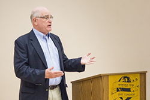
- Steven Sanders presents Rabbi Shanowitz with a letter from the Town of Amherst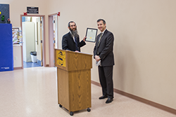
- Rabbi Shuman sharing divrei torah about the school's mission and programs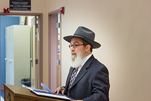
- Rabbi Shuman explaining how Rabbi Shanowitz is an example of Avodas Hashem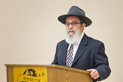
- Rabbi Cadle and his son Binny listening to the words of wisdom shared by our leaders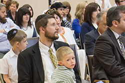
- Rabbi Nosson Gurary introducing the new preschool and sharing his memories

- Mr. Arthur Gellman describing the endless amounts of time and patience our staff spends on our children

- Rabbi Shanowitz thanking everyone for coming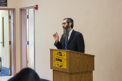
- The cake was both beautiful and delicious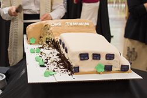
- The Kindergarten and First Grade students went to Audubon Public Library for their end-of-year field trip

- Nochum Greenberg leans forward, not wanting to miss a single word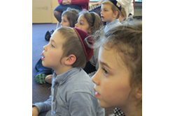
- Mrs. Stanton, the librarian, is a master storyteller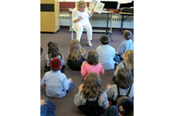
- Shneur Zalman Kopman struggles to break a bundle of sticks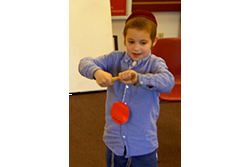
- Mrs. Morrison and her class relax outside after they leave the library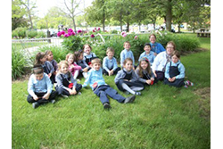
- A delicious Torah cake for our Chumash students and goody bags for the entire school!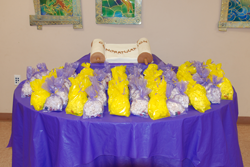
- The students' brand new Chumashim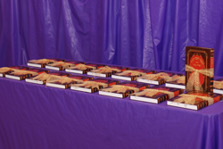
-
- Our proud Chumash students!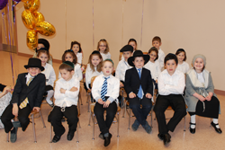
- Welcome parents, bubbies, and zaidies!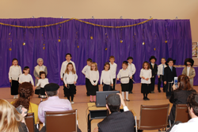
- Nochum Greenberg and Levi Oren led the recitation of Tehillim, Chapter 20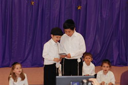
- "Rabbi Yossi and his Talmidim", a play by the first grade students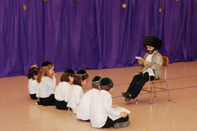
- The other Rabbi Yossi and his talmidim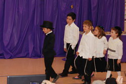
- A rich gentleman approached Rabbi Yossi...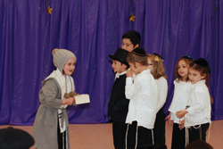
- ... And another rich gentleman approached Rabbi Yossi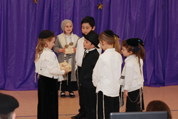
- ... And a third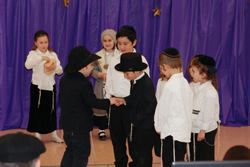
- ... And a fourth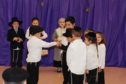
- ... But Rabbi Yossi won't be swayed. He'll only live in a place of scholars and Torah learning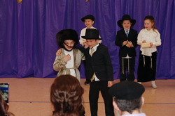
- Song and dance performed by first grade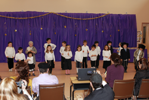
- The children open their treasure boxes to find that their greatest treasure is...the Torah!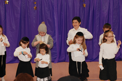
- Mendy Cohen and Alex Kleyman, Kohanim and parents, bless the children with the Birkat Kohanim.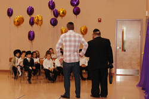
- The children begin by learning the first verses of Sefer Vayikra with Morah Gitty.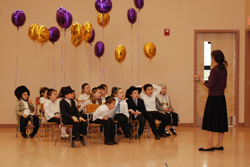
- The proud students with their new Chumashim!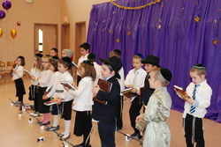
- So excited to begin!
- Eagerly flipping through their new Sefer!